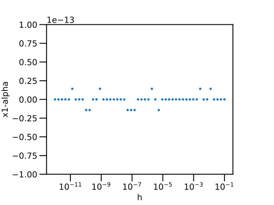
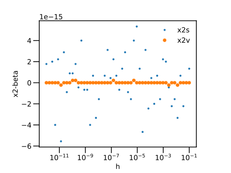
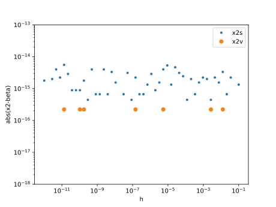
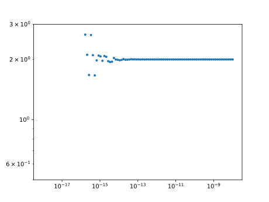
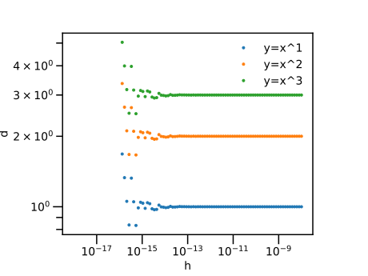

<!DOCTYPE html>
<html lang="en"><head><meta charset="UTF-8"/><meta name="viewport" content="width=device-width, initial-scale=1.0"/><title>第7回：■ 浮動小数点数 · Memorandum on Julia Language v1.1</title><link href="https://fonts.googleapis.com/css?family=Lato|Roboto+Mono" rel="stylesheet" type="text/css"/><link href="https://cdnjs.cloudflare.com/ajax/libs/font-awesome/5.11.2/css/fontawesome.min.css" rel="stylesheet" type="text/css"/><link href="https://cdnjs.cloudflare.com/ajax/libs/font-awesome/5.11.2/css/solid.min.css" rel="stylesheet" type="text/css"/><link href="https://cdnjs.cloudflare.com/ajax/libs/font-awesome/5.11.2/css/brands.min.css" rel="stylesheet" type="text/css"/><link href="https://cdnjs.cloudflare.com/ajax/libs/KaTeX/0.11.1/katex.min.css" rel="stylesheet" type="text/css"/><script>documenterBaseURL=".."</script><script src="https://cdnjs.cloudflare.com/ajax/libs/require.js/2.3.6/require.min.js" data-main="../assets/documenter.js"></script><script src="../siteinfo.js"></script><script src="../../versions.js"></script><link class="docs-theme-link" rel="stylesheet" type="text/css" href="../assets/themes/documenter-dark.css" data-theme-name="documenter-dark"/><link class="docs-theme-link" rel="stylesheet" type="text/css" href="../assets/themes/documenter-light.css" data-theme-name="documenter-light" data-theme-primary/><script src="../assets/themeswap.js"></script></head><body><div id="documenter"><nav class="docs-sidebar"><div class="docs-package-name"><span class="docs-autofit">Memorandum on Julia Language v1.1</span></div><form class="docs-search" action="../search/"><input class="docs-search-query" id="documenter-search-query" name="q" type="text" placeholder="Search docs"/></form><ul class="docs-menu"><li><a class="tocitem" href="../LICENSE/">MIT License</a></li><li><a class="tocitem" href="../LICENSEja/">MIT License 参考和訳</a></li><li><a class="tocitem" href="../ch00/">はじめに</a></li><li><a class="tocitem" href="../ch01/">第1回：▼ 簡単なグラフを描く</a></li><li><a class="tocitem" href="../ch02/">第2回：▼ 複数のグラフを描く</a></li><li><a class="tocitem" href="../ch03/">第3回：▼ 連続な曲線を描く</a></li><li><a class="tocitem" href="../ch04/">第4回：▼ 不連続な曲線を描く</a></li><li><a class="tocitem" href="../ch05/">第5回：■ 条件式・■ 条件分岐</a></li><li><a class="tocitem" href="../ch06/">第6回：■ 整数</a></li><li class="is-active"><a class="tocitem" href>第7回：■ 浮動小数点数</a><ul class="internal"><li><a class="tocitem" href="#浮動小数点数-1"><span>■ 浮動小数点数</span></a></li><li><a class="tocitem" href="#小数を2進数へ変換する-1"><span>▼ 小数を2進数へ変換する</span></a></li><li><a class="tocitem" href="#練習：有限小数・循環小数-1"><span>▲ 練習：有限小数・循環小数</span></a></li><li><a class="tocitem" href="#加減算における桁落ちと情報落ち-1"><span>■ 加減算における桁落ちと情報落ち</span></a></li><li><a class="tocitem" href="#等差数列-1"><span>■ 等差数列</span></a></li><li><a class="tocitem" href="#等比級数-1"><span>■ 等比級数</span></a></li><li><a class="tocitem" href="#2次方程式-1"><span>▼ 2次方程式</span></a></li><li><a class="tocitem" href="#数値微分-1"><span>▼ 数値微分</span></a></li><li><a class="tocitem" href="#近似比較演算子-isapprox-1"><span>■ 近似比較演算子 <code>isapprox</code></span></a></li><li><a class="tocitem" href="#数でない数の判定-1"><span>■ 数でない数の判定</span></a></li><li><a class="tocitem" href="#今回のまとめ-1"><span>★今回のまとめ</span></a></li></ul></li><li><a class="tocitem" href="../ch08/">第8回： ▼ 総和・数値積分</a></li><li><a class="tocitem" href="../ch09/">第9回： ■ 配列要素の操作／▶常微分方程式の数値解法</a></li><li><a class="tocitem" href="../ch10/">第10回：行列・線形代数</a></li><li><a class="tocitem" href="../ch11/">第11回：ファイル入出力</a></li><li><a class="tocitem" href="../ch12/">第12回：関数の定義と呼び出し</a></li><li><a class="tocitem" href="../ch13/">第13回：複素数</a></li><li><a class="tocitem" href="../ch0a/">付録A：2018年度・定期レポートへのコメント（その1）</a></li><li><a class="tocitem" href="../ch0b/">付録B：2018年度・定期レポートへのコメント（その２）</a></li><li><a class="tocitem" href="../porting/">Julia 0.6 から 1.x への移植</a></li><li><a class="tocitem" href="../">Table of contents</a></li></ul><div class="docs-version-selector field has-addons"><div class="control"><span class="docs-label button is-static is-size-7">Version</span></div><div class="docs-selector control is-expanded"><div class="select is-fullwidth is-size-7"><select id="documenter-version-selector"></select></div></div></div></nav><div class="docs-main"><header class="docs-navbar"><nav class="breadcrumb"><ul class="is-hidden-mobile"><li class="is-active"><a href>第7回：■ 浮動小数点数</a></li></ul><ul class="is-hidden-tablet"><li class="is-active"><a href>第7回：■ 浮動小数点数</a></li></ul></nav><div class="docs-right"><a class="docs-settings-button fas fa-cog" id="documenter-settings-button" href="#" title="Settings"></a><a class="docs-sidebar-button fa fa-bars is-hidden-desktop" id="documenter-sidebar-button" href="#"></a></div></header><article class="content" id="documenter-page"><h1 id="ch07-1"><a class="docs-heading-anchor" href="#ch07-1">第7回：■ 浮動小数点数</a><a class="docs-heading-anchor-permalink" href="#ch07-1" title="Permalink"></a></h1><h2 id="浮動小数点数-1"><a class="docs-heading-anchor" href="#浮動小数点数-1">■ 浮動小数点数</a><a class="docs-heading-anchor-permalink" href="#浮動小数点数-1" title="Permalink"></a></h2><h3 id="正規化数、副正規化数-1"><a class="docs-heading-anchor" href="#正規化数、副正規化数-1">● 正規化数、副正規化数</a><a class="docs-heading-anchor-permalink" href="#正規化数、副正規化数-1" title="Permalink"></a></h3><p>浮動小数とは、<span>$0.12$</span> の代わりに <span>$1.2 \times 10^{-1}$</span> のように表示することである。</p><p>10進数の浮動小数は</p><div>\[\pm{\left(d_0.d_1d_2\cdots \right)}_{10}\times 10^{e}\]</div><p>のように表される。<span>$\times$</span>の前までの<span>${\left(d_0.d_1d_2\cdots \right)}_{10}$</span> の部分は仮数部と呼ばれる。添字の<span>$10$</span>は10進数を意味し、<span>$d_0, d_{1}, \cdots $ は $0,1,\ldots,9$</span> までの数字である。<span>$\times$</span> の後ろの <span>$10^{e}$</span> は指数部と呼ばれる。</p><p>2進数の浮動小数は</p><div>\[\pm{\left(b_0.b_1b_2\cdots \right)}_{2}\times 2^{e}\]</div><p>のように表される。 ここで、<span>$\times$</span>の前までの <span>${\left(b_0.b_1b_2\cdots \right)}_{2}$</span> の部分は仮数部と呼ばれる。添字の<span>$2$</span>は2進数を意味し、<span>$b_0, b_{1}, \cdots $ は $0$</span> または <span>$1$</span> の数字である。<span>$\times$</span> の後ろの <span>$2^{e}$</span> は指数部と呼ばれる。</p><p>bit (binary digit)とは、2進数の一桁のことである。</p><p>本文で用いる浮動小数点数は Float64 型である。</p><pre><code class="language-julia-repl">julia&gt; typeof(1.0)
Float64</code></pre><div class="admonition is-info"><header class="admonition-header">Note</header><div class="admonition-body"><p>以下で、浮動小数点数の2進数による表現を詳しく説明するが、 丸暗記する内容ではない。しかし、計算機内部の小数が 「有限桁」で行われることは、計算機による数値計算では常に意識すべきである。</p></div></div><p>Float64 型は、「IEEE754標準倍精度浮動小数点数」に基づき、 符号部 1 bit、 指数部 11 bit 仮数部 53 bit から構成される。 ただし、以下のように先頭の 1 bitを固定し、 仮数部の 52 bit のみをデータとして採用するため、 2進数の並びは 1+11+52 = 64 bit である。</p><p>Float64は、正規化数、副正規化数、数でない数の３種類からなりたっている。</p><p>正規化数は、<span>$b_{0} = 1$</span>として、 <span>$\pm{\left(1.b_1b_2\cdots b_{52}\right)}_{2}\times 2^{e}$</span> のように表すものである。 ただし、指数は <span>$−1022 \le e \le 1023$</span> の範囲である。 仮数 <span>${\left(1.b_1b_2\cdots b_{52}\right)}_2$</span> は 1以上で2を超えない範囲の小数となる。</p><p>正規化数で表すことができない、絶対値が小さい浮動小数は副正規化数で表わされる。</p><p>副正規化数は、<span>$b_{0} = 0$</span>, <span>$e=−1023$</span> として、 <span>$\pm{\left(0.b_1b_2\cdots b_{52}\right)}_{2}\times 2^{e}$</span> のように表すものである。 仮数部 <span>${\left(1.b_1b_2\cdots b_{52}\right)}_{2}$</span> は 0以上で1を超えない範囲の小数となる。</p><p>「数でない数」は、<a href="../ch04/#0による除算-1">■ 0による除算</a>で、既に説明した。 <code>Inf</code>, <code>-Inf</code>, <code>NaN</code> の３つである。</p><p>Float64で表すことができる、絶対値が最も大きい数は、 正規化数の <span>$2^{1024}≃1.798\times10^{308}$</span> である。 絶対値が最も小さい数は、 副正規化数の <span>$2^{−1022}≃2.225\times10^{−308}$</span> である。</p><p>これらは、関数 <code>floatmax</code>, <code>floatmin</code>でそれぞれ得られる。</p><pre><code class="language-julia-repl">julia&gt; floatmax(Float64)
1.7976931348623157e308

julia&gt; floatmin(Float64)
2.2250738585072014e-308</code></pre><h3 id="丸め-1"><a class="docs-heading-anchor" href="#丸め-1">丸め</a><a class="docs-heading-anchor-permalink" href="#丸め-1" title="Permalink"></a></h3><p>小数 <span>$0.2$</span> は <span>$0.2 = \dfrac{1}{5} = \dfrac{1}{{101}_{2}}$</span> となるが、<span>$1$</span> を <span>${101}_{2}$</span> で割り切ることはできない。<span>$0.2$</span> を2進数で表すと</p><div>\[{0.00110011001100\cdots}_{2}\]</div><p>のようになる。すなわち、<span>$1100$</span> の並びが無限に続く循環小数となる。</p><p>また、小数 <span>$0.1$</span> は <span>$0.1 = \dfrac{1}{5\times 2} = \dfrac{1}{{101}_{2}} \times 2^{-1}$</span> であるから、$0.1$ を2進数で表すと（上を1桁ずらして）</p><div>\[{0.000110011001100\cdots}_{2}\]</div><p>のようになる。これも、<span>$1100$</span> の並びが無限に続く循環小数となる。</p><p> 「有限桁の小数」で表すことができない「循環小数」を、 Float64型で表現するとき、 その仮数の末尾に近い桁を修正する操作を行う場合がある。 この操作を「丸める」という。</p><p>「丸め」られた浮動小数の計算は、筆算とは違う結果となる場合がある。 例えば、</p><pre><code class="language-julia-repl">julia&gt; 0.1+0.2
0.30000000000000004

julia&gt; 0.1+0.2 == 0.3
false</code></pre><p>筆算の結果は <span>$0.3$</span>であるが、 計算結果は <code>0.30000000000000004</code> と異なってしまう。</p><p>別の例として、<span>$0.1$</span>を 10回足した結果は</p><pre><code class="language-julia-repl">julia&gt; s=0
0

julia&gt; for i in 1:10
         global s
         s += 0.1
       end

julia&gt; @show s
s = 0.9999999999999999
0.9999999999999999

julia&gt; s == 1.0
false</code></pre><p>0.9999999999999999 となり、<span>$1.0$</span> にはならない。</p><p>このような、「丸め」を原因とする、 正しい値からの「ずれ」を「丸め誤差」と呼んでいる。</p><h2 id="小数を2進数へ変換する-1"><a class="docs-heading-anchor" href="#小数を2進数へ変換する-1">▼ 小数を2進数へ変換する</a><a class="docs-heading-anchor-permalink" href="#小数を2進数へ変換する-1" title="Permalink"></a></h2><div>\[x=f_{1}2^{-1} + f_{2}2^{-2} + \cdots\]</div><p>(正の)小数を2進数に変換するには、 小数を2倍しその整数部分を取り出すことを、繰り返し行えばよい。</p><p>小数 0.2を、2進数で表示すると循環小数になる。 1100 のパターンが繰り返し現れる。</p><pre><code class="language-julia-repl">julia&gt; x=0.2
0.2

julia&gt; for i=1:50
         global x
         q=floor(x/2)
         print(Int64(q))
         x -= q*2
         x *= 2
       end
00001100110011001100110011001100110011001100110011</code></pre><p>上の結果の最初の桁は、<span>$2^1$</span> の桁に相当する。 すなわち、小数点は、２つ目の数字の後ろに位置する。</p><h2 id="練習：有限小数・循環小数-1"><a class="docs-heading-anchor" href="#練習：有限小数・循環小数-1">▲ 練習：有限小数・循環小数</a><a class="docs-heading-anchor-permalink" href="#練習：有限小数・循環小数-1" title="Permalink"></a></h2><p>0.5以下の正の小数をいくつかを選び、 これらを2進数に直してみよ。有限小数か循環小数かを判定せよ。</p><p>例: 0.1, 0.2, 0.25, 0.3, 0.5</p><p>さらに、5つ程度の例を加えよ。</p><h2 id="加減算における桁落ちと情報落ち-1"><a class="docs-heading-anchor" href="#加減算における桁落ちと情報落ち-1">■ 加減算における桁落ちと情報落ち</a><a class="docs-heading-anchor-permalink" href="#加減算における桁落ちと情報落ち-1" title="Permalink"></a></h2><p>加算と減算は、小数点の位置を合わせて計算されるが、 桁数が有限であることから、正しい得られない場合がある。 その原因のうち「桁落ち」と「情報落ち」の二つの現象が知られている。</p><h3 id="桁落ち-1"><a class="docs-heading-anchor" href="#桁落ち-1">■ 桁落ち</a><a class="docs-heading-anchor-permalink" href="#桁落ち-1" title="Permalink"></a></h3><p>「桁落ち」は、互いに非常に近い二つの数 <span>$x, y$</span> に対して、 減算 <span>$x-y$</span>を行うと、結果の有効桁数が大きく減少する現象である。</p><p>例えば、有効桁数が4桁の二つの数の引き算の例を見よう。</p><pre><code class="language-julia-repl">julia&gt; 2.345 - 1.233
1.112

julia&gt; 1.234 - 1.232
0.0020000000000000018</code></pre><p>前者の結果は 4桁の有効桁数を保っているのに対して、 後者の結果は 1桁の有効桁数になってしまう。（末尾の <code>18</code> は丸め誤差である)。</p><p>式を変形して、 互いに近い数同士を引くことを回避できる場合がある。 下の例を参考にせよ。 → <a href="#2次方程式-1">▼ 2次方程式</a></p><h3 id="情報落ち-1"><a class="docs-heading-anchor" href="#情報落ち-1">■ 情報落ち</a><a class="docs-heading-anchor-permalink" href="#情報落ち-1" title="Permalink"></a></h3><p>「情報落ち」は、絶対値が大きく異なる数を加減算すると、小さい桁の精度が失われる現象である。</p><p>例えば、3つの数 <span>$x = 14\times 10^{-17}$</span>, <span>$y = 24\times 10^{-16}$</span>, <span>$z = 1$</span> を、 この順番で加えた結果と、逆の順番で加えた結果を比較しよう。</p><pre><code class="language-julia-repl">julia&gt; x=14e-17
1.4e-16

julia&gt; y=24e-16
2.4e-15

julia&gt; z=1
1

julia&gt; xyz=(x+y)+z
1.0000000000000024

julia&gt; zyx=(z+y)+x
1.0000000000000027</code></pre><p>筆算による正しい値は <code>1.00000000000000253</code> であるが、 後者の和よりも前者の和が、正しい値に近い。</p><p>後者の和が誤差を大きく含んだのは、和 <span>$z+y$</span> の段階で、有効桁数をほぼ使い切ったからである。</p><pre><code class="language-julia-repl">julia&gt; zy=z+y
1.0000000000000024

julia&gt; nextfloat(zy) # z+y の「隣りの」正しく表される数
1.0000000000000027</code></pre><p>一般に、大きさの異なる数同士を加減算する場合には、絶対値が小さいものから計算を進めたほうがよい。</p><p>ここで見たように、有限桁数の浮動小数点数の加減算は「結合則」を満たさない。</p><div>\[(x+y)+z \neq x+(y+x)\]</div><h2 id="等差数列-1"><a class="docs-heading-anchor" href="#等差数列-1">■ 等差数列</a><a class="docs-heading-anchor-permalink" href="#等差数列-1" title="Permalink"></a></h2><p><a href="https://docs.julialang.org/en/v1/base/math/#Base.range"><code>Base.range</code> — Function</a></p><p>等差数列を作る方法として、<a href="../ch01/#Range型-1">■ Range型</a>を、先に紹介した。</p><p>関数 <code>range(a,b,length=n)</code> は、等差数列を作る別の方法である。 この関数は、初項 <span>$a$</span> から始めて <span>$b$</span> で終わる等差数列を作る。 要素の数は <span>$n$</span> 個であり、等差 (要素同士の間隔)は、自動的に計算される。 結果は <a href="../ch01/#Range型-1">■ Range型</a> になる(場合が多い)。</p><pre><code class="language-julia-repl">julia&gt; range(0,10,length=11)
0.0:1.0:10.0</code></pre><p><code>length=10</code> の形の引数は、キーワード引数と呼ばれる。</p><h2 id="等比級数-1"><a class="docs-heading-anchor" href="#等比級数-1">■ 等比級数</a><a class="docs-heading-anchor-permalink" href="#等比級数-1" title="Permalink"></a></h2><p>等比級数は、一定の数 (等比 common multiplier)を順番に乗じて得られる数列である。 等比級数は、ベクトルやRange型と指数関数を組合われば作ることができる。</p><p>以下は、初項 <span>$10^{0}=1$</span> から始めて、<span>$10^{3}=1000$</span> で終わる等比級数 (要素は <span>$4$</span> 個 ) を作る。すなわち、<span>$1, 10, 100, 1000$</span> を作る。</p><pre><code class="language-julia-repl">julia&gt; # 整数
       10 .^(0:3)
4-element Array{Int64,1}:
    1
   10
  100
 1000

julia&gt; # 小数
       exp10.(0:3)
4-element Array{Float64,1}:
    1.0
   10.0
  100.0
 1000.0</code></pre><p>以下は、<span>$1$</span> から始まり <span>$1000$</span> で終わる、要素 10個の等比級数を作る。</p><pre><code class="language-julia-repl">julia&gt; exp10.(range(0,3,length=10))
10-element Array{Float64,1}:
    1.0
    2.154434690031884
    4.641588833612778
   10.0
   21.544346900318832
   46.4158883361278
  100.0
  215.44346900318845
  464.15888336127773
 1000.0</code></pre><h2 id="2次方程式-1"><a class="docs-heading-anchor" href="#2次方程式-1">▼ 2次方程式</a><a class="docs-heading-anchor-permalink" href="#2次方程式-1" title="Permalink"></a></h2><p>2次方程式 <span>$x^2-bx+c=0$</span> の解は、解の公式から、判別式 <span>$d=b^2-4c$</span> を用いて</p><div>\[x_1 = \dfrac{b+\sqrt{d}}{2}=\dfrac{b+\sqrt{b^2-4c}}{2} \\
x_2 = \dfrac{b-\sqrt{d}}{2}=\dfrac{b-\sqrt{b^2-4c}}{2}\]</div><p>と求められるが、<span>$b$</span> と <span>$\sqrt{d}$</span> が同程度のとき <span>$x_2$</span> は「桁落ち」しやすい。</p><p>そこで、<span>$(b+\sqrt{b^2-4c})$</span> を分母分子に掛けて</p><div>\[x_{21} = \dfrac{2c}{b+\sqrt{b^2-4c}}=\dfrac{c}{x_1}\]</div><p>のように変形してから計算する。最後の項は、解と係数の関係 <span>$x_1x_2=c$</span> による。</p><div class="admonition is-info"><header class="admonition-header">Note</header><div class="admonition-body"><p>解と係数の関係。 <span>$x^2-bx+c=0$</span> の解が <span>$x_1, x_2$</span> であるとき、</p><div>\[(x-x_1)(x-x_2) = x^2-(x_1+x_2)x+x_1x_2 = x^2-bx+c,\]</div><p>であるから、末尾の２つを比較して、以下を得る。</p><div>\[\begin{align*}
b &amp; = x_1+x_2, \\
c &amp; = x_1x_2
\end{align*}\]</div></div></div><h3 id="2次方程式：計算の例-1"><a class="docs-heading-anchor" href="#2次方程式：計算の例-1">▼ 2次方程式：計算の例</a><a class="docs-heading-anchor-permalink" href="#2次方程式：計算の例-1" title="Permalink"></a></h3><p>実例で見てみよう。</p><p>小さい正の数 <span>$h$</span> を用いて、<span>$\alpha = 100+h$</span> と <span>$\beta = 1+h$</span> を解とする2次方程式を作る。 解と係数の関係から、 上の方程式において <span>$b = \alpha + \beta$</span>, <span>$c=\alpha\beta$</span> と定めればよい。</p><pre><code class="language-julia"># h=logspace(-12,-1);
h=exp10.(range(-12,-1,length=50))

alpha=100.0 .+h
beta=1.0 .+h;
c=alpha .* beta;
b=alpha .+ beta;</code></pre><pre><code class="language-none">50-element Array{Float64,1}:
 101.00000000000199
 101.00000000000335
 101.00000000000563
 101.00000000000944
 101.0000000000158 
 101.00000000002652
 101.00000000004445
 101.00000000007455
 101.000000000125  
 101.00000000020961
   ⋮               
 101.0031997174392 
 101.00536539159057
 101.00899686533793
 101.01508624012672
 101.02529710433711
 101.04241901775839
 101.07112960612446
 101.11927246633189
 101.19999999999999</code></pre><p>解の公式から、「大きい方の解」 <code>x1</code> を計算する。 <code>x2s</code> は解の公式から求めた「小さい方の解」、である <code>x2v</code> は解と係数の関係から求めた「小さい方の解」</p><pre><code class="language-julia">d=b.*b-4c;
x1=(b+sqrt.(d))/2;
x2s=(b-sqrt.(d))/2;
x2v=c./x1;</code></pre><pre><code class="language-none">50-element Array{Float64,1}:
 1.000000000001    
 1.0000000000016769
 1.0000000000028118
 1.000000000004715 
 1.0000000000079061
 1.000000000013257 
 1.00000000002223  
 1.000000000037276 
 1.0000000000625056
 1.0000000001048115
 ⋮                 
 1.001599858719606 
 1.0026826957952795
 1.0044984326689694
 1.0075431200633547
 1.0126485521685527
 1.021209508879202 
 1.0355648030622313
 1.0596362331659464
 1.1               </code></pre><p>「大きい方の解」について、正しい解との差をプロットしてみる。</p><pre><code class="language-julia">using PyPlot
plt.plot(h, x1-alpha, &quot;.&quot;)
plt.xlabel(&quot;h&quot;)
plt.ylabel(&quot;x1-alpha&quot;)
plt.xscale(&quot;log&quot;)</code></pre><p></p><p>「小さい方の解」について、正しい解との差をプロットしてみる。上に続けて：</p><pre><code class="language-julia">plt.plot(h, x2s-beta,&quot;.&quot;,label=&quot;x2s&quot;)
plt.plot(h, x2v-beta, &quot;o&quot;,label=&quot;x2v&quot;)
plt.xlabel(&quot;h&quot;)
plt.ylabel(&quot;x2-beta&quot;)
plt.xscale(&quot;log&quot;)
plt.legend()</code></pre><p></p><p>「小さい方の解」について、正しい解との差の絶対値(残差)をプロットしてみる。上に続けて</p><pre><code class="language-julia">plt.plot(h, abs.(x2s-beta),&quot;.&quot;,label=&quot;x2s&quot;)
plt.plot(h, abs.(x2v-beta), &quot;o&quot;,label=&quot;x2v&quot;)
plt.xlabel(&quot;h&quot;)
plt.ylabel(&quot;abs(x2-beta)&quot;)
plt.xscale(&quot;log&quot;)
plt.ylim(1e-18,1e-13)
plt.yscale(&quot;log&quot;)
plt.legend()</code></pre><p></p><p>解の公式から求めた「小さい方の解」の残差が「あばれる」のに対して、 解と係数の関係から求めた小さい方の解」の残差が「一定」である様子が見れる。</p><h2 id="数値微分-1"><a class="docs-heading-anchor" href="#数値微分-1">▼ 数値微分</a><a class="docs-heading-anchor-permalink" href="#数値微分-1" title="Permalink"></a></h2><div>\[\dfrac{df(x_0)}{dx} = \lim_{h \longrightarrow 0}\dfrac{f(x_0+h)-f(x_0)}{h}\]</div><p>関数 <span>$y=x^2$</span> の <span>$x=1$</span> における微分係数を、 上の定義により求めよう。 求まるべき値は <span>$2$</span> であるが、<span>$h$</span> を小さくすると <span>$2$</span> の上下に暴れてしまう。</p><pre><code class="language-julia">using PyPlot
# h=logspace(-18,-8,100)
h=exp10.(range(-18,-8,length=100))
d=( (1.0 .+h).^2 .- 1.0) ./ h
plt.plot(h,d, &quot;.&quot;)
plt.ylim(5e-1,3e0)
plt.yscale(&quot;log&quot;)
plt.xscale(&quot;log&quot;)</code></pre><p></p><p>今度は、関数 <span>$y=x^n$</span>, (<span>$n=1,2,3$</span>) の <span>$x=1$</span> における微分係数を、 上の定義により求めよう。 求まるべき値は <span>$n$</span> であるが、<span>$h$</span> を小さくすると <span>$n$</span> の上下に暴れてしまう。</p><pre><code class="language-julia">using PyPlot
# h=logspace(-18,-8,100)
h=exp10.(range(-18,-8,length=100))

for n=1:3
  d=( (1.0 .+h).^n .- 1.0) ./ h
  plt.plot(h,d, &quot;.&quot;, label=&quot;y=x^&quot;*string(n))
end
plt.xlabel(&quot;h&quot;)
plt.ylabel(&quot;d&quot;)
plt.yscale(&quot;log&quot;)
plt.xscale(&quot;log&quot;)
plt.legend()</code></pre><p></p><p>以上の誤差も、非常に近い二つの数字を減じたときに現れる「桁落ち」の現象である。 <a href="#2次方程式-1">▼ 2次方程式</a>とは異なり、うまく回避する手段はない。<span>$h$</span>を小さく取りすぎないように注意する。</p><h3 id="練習・数値微分-1"><a class="docs-heading-anchor" href="#練習・数値微分-1">▼ 練習・数値微分</a><a class="docs-heading-anchor-permalink" href="#練習・数値微分-1" title="Permalink"></a></h3><p>以下の関数の、指定された座標での微分係数を、上の例と同様に求めてみよ。</p><ul><li>指数関数 <span>$y = \exp{x}, \; x = 0$</span></li><li>対数関数 <span>$y = \log{x}, \; x = 1$</span></li><li>対数関数 <span>$y = \log\left(1+x\right), \; x = 0 \;$</span>  ▶ 注: 関数 <a href="https://docs.julialang.org/en/v0.6/stdlib/math/#Base.log1p"><code>Base.log1p</code> — Function</a> を用いよ。</li><li>三角関数 <span>$y = \sin{x}, \; x = 1$</span>。▶ 正しい微分係数は <code>0.540302305868140</code> である。</li></ul><h2 id="近似比較演算子-isapprox-1"><a class="docs-heading-anchor" href="#近似比較演算子-isapprox-1">■ 近似比較演算子 <code>isapprox</code></a><a class="docs-heading-anchor-permalink" href="#近似比較演算子-isapprox-1" title="Permalink"></a></h2><p>条件式 <code>x == 1</code> は、 数 <code>x</code> が <code>1</code> と完全に一致することを判定するので、 数 <code>x</code> が丸め誤差を含むような場合に用いるのに適さない。</p><p>その代わりに、丸め誤差の基準を適当な数、 例えば、<span>$10^{-6}$</span> をとって、 条件式 <code>abs(x-1) &lt; 1e-6</code> をもって、数 <span>$x$</span>が <span>$1$</span> に非常に近いことを判定するのが常套手段である。</p><pre><code class="language-julia-repl">julia&gt; x=1+1e-8
1.00000001

julia&gt; x == 0
false

julia&gt; abs(x-1) &lt; 1e-6
true</code></pre><ul><li><a href="https://docs.julialang.org/en/v1.1/base/math/#Base.isapprox"><code>Base.isapprox</code> - Function</a></li></ul><p>Julia には、数 <code>a</code> と <code>b</code> がほぼ等しいことを判定する 近似比較演算子 <code>isapprox(a,b)</code> が用意されているので、 必要に応じて用いるとよい。<code>a</code> と <code>b</code> との丸め誤差の程度を考慮して、比較を行う便利な関数である。</p><pre><code class="language-julia-repl">julia&gt; 0.1+0.2 == 0.3
false

julia&gt; isapprox(0.1+0.2, 0.3)
true</code></pre><h2 id="数でない数の判定-1"><a class="docs-heading-anchor" href="#数でない数の判定-1">■ 数でない数の判定</a><a class="docs-heading-anchor-permalink" href="#数でない数の判定-1" title="Permalink"></a></h2><p><a href="https://docs.julialang.org/en/v1.1/manual/mathematical-operations/#Numeric-Comparisons-1">Numeric Comparisons (section)</a></p><p><a href="../ch04/#0による除算-1">■ 0による除算</a>で社迂回したように、 IEEE754規格の浮動小数点数は、 「数でない数」<code>NaN</code>, <code>Inf</code>, <code>-Inf</code> の3つを含んでいる。 これらを判定する関数が用意されている。</p><ul><li><a href="https://docs.julialang.org/en/v1.1/base/numbers/#Base.isfinite"><code>Base.isfinite</code> - Function</a></li><li><a href="https://docs.julialang.org/en/v1.1/base/numbers/#Base.isinf"><code>Base.isinf</code> - Function</a></li><li><a href="https://docs.julialang.org/en/v1.1/base/numbers/#Base.isnan"><code>Base.isnan</code> - Function</a></li></ul><pre><code class="language-julia-repl">julia&gt; for x in [0,1,Inf,NaN,NaN]
         println()
         @show isfinite(x)
         @show isinf(x)
         @show isnan(x)
       end

isfinite(x) = true
isinf(x) = false
isnan(x) = false

isfinite(x) = true
isinf(x) = false
isnan(x) = false

isfinite(x) = false
isinf(x) = true
isnan(x) = false

isfinite(x) = false
isinf(x) = false
isnan(x) = true

isfinite(x) = false
isinf(x) = false
isnan(x) = true</code></pre><h2 id="今回のまとめ-1"><a class="docs-heading-anchor" href="#今回のまとめ-1">★今回のまとめ</a><a class="docs-heading-anchor-permalink" href="#今回のまとめ-1" title="Permalink"></a></h2><ul><li>浮動小数点数</li><li>有限小数・循環小数</li><li>加減算における桁落ち・情報落ち</li><li>近似比較演算子</li><li>等差数列・等比数列</li><li>数値微分</li><li>数でない数</li></ul></article><nav class="docs-footer"><a class="docs-footer-prevpage" href="../ch06/">« 第6回：■ 整数</a><a class="docs-footer-nextpage" href="../ch08/">第8回： ▼ 総和・数値積分 »</a></nav></div><div class="modal" id="documenter-settings"><div class="modal-background"></div><div class="modal-card"><header class="modal-card-head"><p class="modal-card-title">Settings</p><button class="delete"></button></header><section class="modal-card-body"><p><label class="label">Theme</label><div class="select"><select id="documenter-themepicker"><option value="documenter-light">documenter-light</option><option value="documenter-dark">documenter-dark</option></select></div></p><hr/><p>This document was generated with <a href="https://github.com/JuliaDocs/Documenter.jl">Documenter.jl</a> on <span class="colophon-date" title="Wednesday 1 January 2020 14:22">Wednesday 1 January 2020</span>. Using Julia version 1.1.1.</p></section><footer class="modal-card-foot"></footer></div></div></div></body></html>
